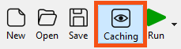
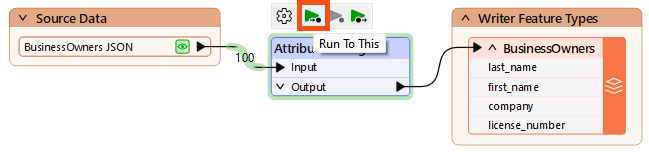
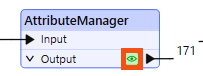
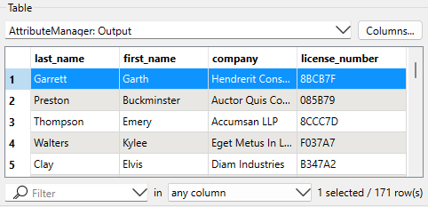
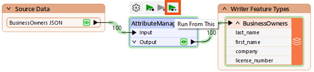

After completing this lesson, you’ll be able to:
In this lesson, you will:
Jennifer has edited her data’s schema using an AttributeManager. She knows the data changed because she can see the green attribute ports showing successful schema mapping. However, Jennifer wants to see the changes to her data in Data Preview.
Jennifer can do this using data caching. Data caching is an authoring mode that is enabled by default. When enabled, a local data cache is stored at every output port in the workspace. These caches let you view and compare data anywhere in your workspace.
Data caching is useful when you are authoring a workspace. It lets you use iterative and incremental development to add one transformer or feature type at a time, create a cache, and inspect it to confirm the data looks as you expect. It is particularly advantageous when working with web, database, or compressed data. It allows you to download, query, or extract data once and use a cache, saving time and effort when reading large datasets or making API calls. However, creating these caches takes time, so it’s wise to disable this mode when you want FME to run at peak efficiency.
We'll leave data caching on for now since it can speed up authoring. You can toggle data caching on and off using the button on the toolbar.

With data caching enabled, you have access to another FME Workbench feature: partial runs.
Partial runs let you run specified sections of your workspace instead of the entire workspace. This feature works in tandem with data caching to enable incremental development. When you add a new transformer or feature type, you can run that new object independently and inspect its cache for any problems. Authoring workspaces this way saves time by allowing you to detect and fix problems early.
Partial runs will utilize any connected caches “upstream” (i.e., earlier in the data flow). As few transformers or feature types will run as required to carry out the partial run, saving you time.
Jennifer will partial runs to speed up workspace authoring and debug them as she works.
We want to run our workspace to ensure the AttributeManager worked properly. We could just click Run > Rerun Entire Workspace. However, as workspaces grow, running only the changed section is better.



Now that we've confirmed the schema is correct, we want to write the data.
